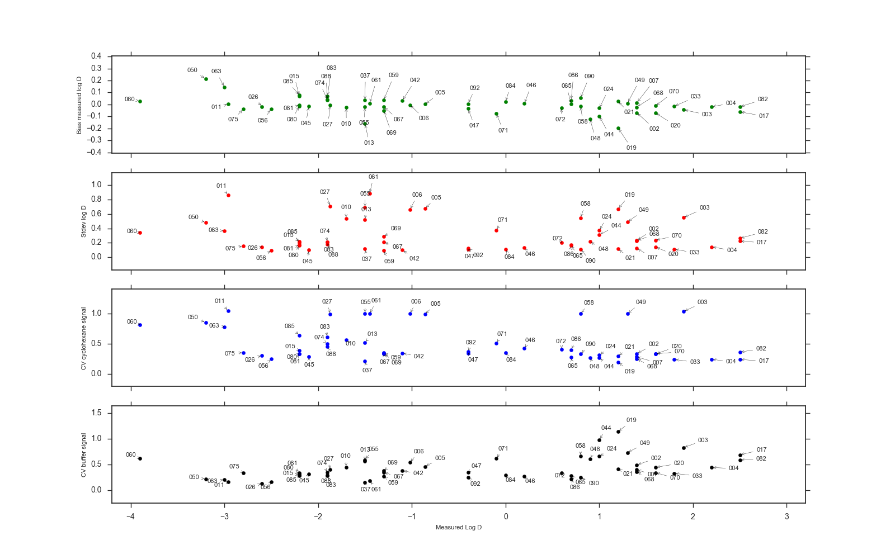

First we define all the models needed to describe the experiments
List of imported libraries
from __future__ import print_function
from numpy.random import normal, choice
import numpy as np
import pandas as pd
from scipy.interpolate import interp1d
from uncertainties import ufloat
from bootstrap_plotting import make_plotsThese models simply calculate the expected imprecision and inaccuracy of the pipettes used for sample preparation.
Model of a multichannel pipette, which was used to pipette octanol
def rainin_multichannel_pipetting_model(volume):
""" Data obtained from
https://www.shoprainin.com/Pipettes/Multichannel-Manual-Pipettes/Pipet-Lite-XLS%2B/Pipet-Lite-Multi-Pipette-L8-200XLS%2B/p/17013805
Parameters
----------
volume - volume pipetted in microliters
Notes
-----
This is the pipette used for pipetting octanol for the cyclohexane dilution into octanol.
Returns
-------
Expected Inaccuracy, Imprecision
"""
imprecision_function = interp1d(
[20.0, 100.0, 200.0], # volume range (uL)
[0.01, 0.0025,0.0015]) # relative imprecision for these volumes from rainin website
inaccuracy_function = interp1d(
[20.0, 100.0, 200.0], # volume range (uL)
[0.025, 0.008, 0.008]) # relative inaccuracy for these volumes from rainin website
return [inaccuracy_function(volume), imprecision_function(volume)]Model of a single channel pipette, which was used to pipette cyclohexane
def rainin_singlechannel_pipetting_model(volume):
""" Data obtained from
https://www.shoprainin.com/Pipettes/Single-Channel-Manual-Pipettes/RAININ-Classic/Rainin-Classic-Pipette-PR-10/p/17008649
Parameters
----------
volume - volume pipetted in microliters
Notes
-----
This is the pipette used for pipetting cyclohexane into octanol
Returns
-------
Expected Inaccuracy, Imprecision
"""
imprecision_function = interp1d(
[1.0, 5.0, 10.0], # volume range (uL)
[0.012, 0.006, 0.004]) # relative imprecision for these volumes from rainin website
inaccuracy_function = interp1d(
[1.0, 5.0, 10.0], # volume range (uL)
[0.025, 0.015, 0.01]) # relative inaccuracy for these volumes from rainin website
return [inaccuracy_function(volume), imprecision_function(volume)]These functions simulate new, random values of the experiment, based on the measured estimates, and expected bias and variance.
def cyclohexane_dilution_bootstrap(expected_cyclohexane_volume=10., expected_octanol_volume=90.):
"""
Bootstrapping model for cyclohexane dilution dilution step.
Parameters
----------
expected_cyclohexane_volume - float
the expected volume of cyclohexane in uL
expected_octanol_volume - float
the expected volume of octanol that was added in order to dilute cyclohexane in uL
Returns
-------
The expected dilution factor of the cyclohexane sample.
"""
cyclohexane_inaccuracy, cyclohexane_imprecision = rainin_singlechannel_pipetting_model(expected_cyclohexane_volume)
oct_inaccuracy, oct_imprecision = rainin_multichannel_pipetting_model(expected_octanol_volume)Relative bias and variance are simulated from standard normal distribution $$\begin{align} \text{Relative bias} \sim \mathcal{N}(0,1) \\ \text{Relative variance} \sim \mathcal{N}(0,1) \\ \end{align}$$
bias_cyclohexane = normal()
bias_octanol = normal()
variance_cyclohexane = normal()
variance_octanol = normal()Relative variance and bias estimates are scaled by the factor presumed from the pipette model.
Vcyclohexane_sample = expected_cyclohexane_volume * ((1 + cyclohexane_inaccuracy * bias_cyclohexane) + cyclohexane_imprecision * variance_cyclohexane)
Voct_sample = expected_octanol_volume * ((1 + oct_inaccuracy * bias_octanol) + oct_imprecision * variance_octanol)
return Vcyclohexane_sample / (Vcyclohexane_sample+Voct_sample)
def measurement_bootstrap(cyclohexane_signal, buffer_signal):
"""
Bootstrapping model for errors due to noise and integration errors in MRM signal.
Parameters
----------
cyclohexane_signal - int
The raw counts for the cyclohexane phase
buffer_signal - int
The raw counts for the buffer phase
Returns
-------
Random sample of counts cyclohexane, buffer
"""Assumption: the integration procedure is messy, the data is noisy, but less or equal to 10% inaccuracy/imprecision is introduced for these causes.
signal_inaccuracy = 0.1
signal_imprecision = 0.1Relative bias and variance are simulated from standard normal distribution
$$\begin{align} \text{Relative bias} \sim \mathcal{N}(0,1) \\ \text{Relative variance} \sim \mathcal{N}(0,1) \\ \end{align}$$
Data is integrated separately, and injections may have different sources of noise, so the random bias is selected separately.
bias_cyclohexane = normal()
bias_buffer = normal()
variance_cyclohexane = normal()
variance_buffer = normal()Relative variance and bias estimates are scaled by the factor presumed above
cyclohexane_signal_sample = cyclohexane_signal * ((1 + signal_inaccuracy * bias_cyclohexane) + signal_imprecision * variance_cyclohexane)
buffer_signal_sample = buffer_signal * ((1 + signal_inaccuracy * bias_buffer) + signal_imprecision * variance_buffer)
return cyclohexane_signal_sample, buffer_signal_sampleThese functions sample from the data using the models we’ve defined above.
def resample_repeats(measurements):
"""
Make random selections with replacement from the provided array.
Used to resample repeat experiments. Returns array with the same number of repeat measurements as input.
"""
n = measurements.shape[0]
return measurements[choice(n,n)]
def resample_replicates(measurements):
"""
Make random selections with replacement from the provided array, then proceed to do the same for the array inside of the array.
Used to resample repeat experiments, and within each repeat, resample the replicates.
Returns array with the same number of repeat measurements as input.
"""First, select repeats with replacement.
measurements = resample_repeats(measurements)For every repeat, resample the replicate measurements.
for m, meas in enumerate(measurements):
n = meas.shape[0]
measurements[m] = meas[choice(n,n)]
return measurementsThis function brings it all together.
def sample(measurements, resample_measurements=False):
"""
Sample a result for a single compound, given all its repeats, and technical replicate measurements.
Parameters
----------
measurements - np.ndarray
All measurements for a single compound
[
[repeat 1 [cyclohexane_signal, cyclohexane_volume, buffer_signal, buffer_volume]_1, ..., [cyclohexane_signal, cyclohexane_volume, buffer_signal, buffer_volume]_nrepl],
[repeat 2 [cyclohexane_signal, cyclohexane_volume, buffer_signal, buffer_volume]_1, ..., [cyclohexane_signal, cyclohexane_volume, buffer_signal, buffer_volume]_nrepl],
...
[repeat n [cyclohexane_signal, cyclohexane_volume, buffer_signal, buffer_volume]_1, ..., [cyclohexane_signal, cyclohexane_volume, buffer_signal, buffer_volume]_nrep]
]
resample_measurements - bool, optional
Resample from real data values (default: False)
Returns
-------
Log D - array
"""This part validates the input structure
Need np.ndarray for this to work
assert type(measurements) == np.ndarrayMake sure data points exists as quartets, otherwise something is wrong.
assert measurements.shape[-1] == 4To account for numeric bias introduced from the limited amount of measurements we can choose to sample from them with replacement.
if resample_measurements:
measurements = resample_replicates(measurements)
result = np.empty(measurements.size / measurements.shape[-1]) # Number of log D estimates/measurements
cyclohexane_signals = np.empty(measurements.size / measurements.shape[-1])
buffer_signals = np.empty(measurements.size / measurements.shape[-1])First, loop
for r, repeat in enumerate(measurements):Every replicate will have the same dilution factor
actual_dilution_factor = cyclohexane_dilution_bootstrap()
for i, measurement in enumerate(repeat):
chx = measurement[0]
cyclohexane_injection_volume = measurement[1]
buffer = measurement[2]
buffer_injection_volume = measurement[3]Randomly sample inaccuracy and imprecision in signal
actual_cyclohexane_signal, actual_buffer_signal = measurement_bootstrap(chx,buffer)
actual_cyclohexane_signal /= actual_dilution_factorConvert m/z counts to concentration.
proportional_cyclohexane_concentration = (actual_cyclohexane_signal / cyclohexane_injection_volume)
proportional_buffer_concentration = (actual_buffer_signal / buffer_injection_volume)Get the correct linear index of the measurement.
index = r * len(repeat) + iCalculate the log D, base 10 as log ([MRM_cyclohexane/vol_cyclohexane]/[MRM_buffer/vol_buffer])
result[index] = np.log10(proportional_cyclohexane_concentration / proportional_buffer_concentration)
cyclohexane_signals[index] = proportional_cyclohexane_concentration
buffer_signals[index] = proportional_buffer_concentration
return result, cyclohexane_signals, buffer_signalsActual execution of the code takes place here.
if __name__ == "__main__":Input data from the preprocessing step.
table = pd.read_excel('processed.xlsx', sheetname='Filtered Data')Multiply all cyclohexane volumes by 10 to remove implicit dilution factor, which we will replace by a bootstrap model of the dilution As a quick fix, they’re easily identified in this table as being smaller than 1 microliter)
table["Volume"] = table["Volume"].apply(lambda x: x * 10.0 if x < 0.99 else x)Store data as convenient arrays in dictionary by compound name
data_dict = dict()Every compound in the set gets its own list of repeat experiments
for compound, compound_table in table.groupby("Sample Name"):
dataset = list()Every independent repeat gets a list of replicate measurements of that same repeat
for (dset, repeat), repeat_table in compound_table.groupby(["Set", "Repeat"]):
dataset.append(list())Every replicate has two data points, one for each solvent
for replicate ,replicate_table in repeat_table.groupby("Replicate"):
solvents = replicate_table.groupby(["Solvent"])
chx = solvents.get_group('CHX')
buffer = solvents.get_group('PBS')We need both the signal and the volume to calculate the log D
cyclohexane_signal = float(chx["Analyte Peak Area (counts)"])
cyclohexane_injection_volume = float(chx["Volume"])
buffer_signal = float(buffer["Analyte Peak Area (counts)"])
buffer_injection_volume = float(buffer["Volume"])
dataset[-1].append([cyclohexane_signal, cyclohexane_injection_volume, buffer_signal, buffer_injection_volume])We store each set of measurements for the same compound in this dictionary, after converting it to a np.ndarray.
data_dict[compound] = np.asarray(dataset)Number of bootstrap samples per compound
n_samples = 100See file below for the results.
bootstrap_results = open("LogD_bootstrap.txt", "w")
previous_results = open("../logD_final.txt", "r")
previous_results.readline() # skip header
expected_results = dict()
for line in previous_results: SAMPL5_002, 1.4+/-0.3
compound = line.split(",")[0]
value = float(line.split(",")[1].split('+')[0])
expected_results[compound] = value
print(" Compound Log(D) +/-", file=bootstrap_results)
results = dict()
for compound in sorted(data_dict.keys()):
expected_value = expected_results[compound]
samples = [None] * n_samples # Preallocate list
chxs = [None] * n_samples
buffers = [None] * n_samples
for i in range(n_samples):Draw a new random set of log D estimates
samples[i],chxs[i], buffers[i] = sample(data_dict[compound], resample_measurements=False)
logd = ufloat(np.average(samples), np.std(samples))
bias = expected_value - np.average(samples)
std = np.std(samples)
chx_CV = np.std(chxs)/np.average(chxs)
buf_CV = np.std(buffers)/np.average(buffers)
results[compound] = {'expected_value' : expected_value, 'bias' : bias, 'stdev' : std, 'chx_CV' : chx_CV, 'buf_CV' : buf_CV}Data is printed with one significant digit in the uncertainty, and the mean is rounded with respect to that digit.
print(compound, "{:.1u}".format(logd) , file=bootstrap_results)
make_plots(results)